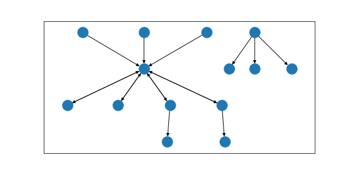

Usage¶
You can use the package in your Python projects, or you can use the provided Command Line Interface. While the former offers more possibilities, the latter might be more intuitive.
Warc2graph uses NetworkX as its graph data and analytics backend, so more involved graph data analytics can be realized when using warc2graph as a Python module.
Python¶
You can inspect the examples.ipynb using Jupyter Notebook for some interactive examples. Our package relies heavily on the NetworkX package. Read its documentation for further information about the possibilities and interfaces for the analysis of NetworkX graphs.
python -m jupyter notebook
examples.ipynb
Creating and plotting a model¶
If you want to create and plot a model, pass:
import warc2graph # our package
import matplotlib.pyplot as plt # plot graphs
import networkx as nx # handle graphs
# assign the path to a warc file to a variable
warc_path = "tests/WEB-20210202165627638-00000-24143~clarin02~8443.warc.gz"
# create a basic model with all resources as nodes and all links and embeddings as edges
basic_model = warc2graph.create_graph(warc_path)
# visualizing the graph using the graphviz "dot" algorithm
fig, ax = plt.subplots(1, figsize=(8, 4))
pos = nx.drawing.nx_agraph.graphviz_layout(basic_model, prog="dot")
x.draw_networkx(basic_model, with_labels=False, pos=pos, ax=ax)
plt.draw()
Outputs:
Calculating different graph metrics¶
You can also calculate different graph metrics like this:
import warc2graph # our package
import networkx as nx # handle graphs
from pprint import PrettyPrinter # print dicts nicely
pp = PrettyPrinter()
warc_path = "tests/WEB-20210202165627638-00000-24143~clarin02~8443.warc.gz"
basic_model = warc2graph.create_graph(warc_path)
degree_centralities = nx.algorithms.centrality.degree_centrality(basic_model)
pp.pprint(degree_centralities)
Prints:
{'http://httpd.apache.org/': 0.07692307692307693,
'http://www.scientificlinux.org/': 0.07692307692307693,
'https://clarin09.ims.uni-stuttgart.de/': 0.23076923076923078,
'https://clarin09.ims.uni-stuttgart.de/icons/apache_pb2.gif': 0.07692307692307693,
'https://clarin09.ims.uni-stuttgart.de/sdc_warc/angular1.html': 0.23076923076923078,
'https://clarin09.ims.uni-stuttgart.de/sdc_warc/index.html': 0.8461538461538463,
'https://clarin09.ims.uni-stuttgart.de/sdc_warc/jquery.html': 0.23076923076923078,
'https://clarin09.ims.uni-stuttgart.de/sdc_warc/js/angular.min.js': 0.07692307692307693,
'https://clarin09.ims.uni-stuttgart.de/sdc_warc/js/jquery-1.11.3.min.js': 0.07692307692307693,
'https://clarin09.ims.uni-stuttgart.de/sdc_warc/page1.html': 0.15384615384615385,
'https://clarin09.ims.uni-stuttgart.de/sdc_warc/page2.html': 0.15384615384615385,
'https://clarin09.ims.uni-stuttgart.de/sdc_warc/page_target_ang1.html': 0.07692307692307693,
'https://clarin09.ims.uni-stuttgart.de/sdc_warc/page_target_jquery1.html': 0.07692307692307693,
'https://clarin09.ims.uni-stuttgart.de/sdc_warc/page_target_jquery2.html': 0.07692307692307693}
Enriched models¶
You can also enrich the models using the original data.
import warc2graph # our package
# assign the path to a warc file to a variable
warc_path = "tests/WEB-20210202165627638-00000-24143~clarin02~8443.warc.gz"
# create an enriched model, structured like the basic model but containing the html content and counts of all tags
enriched_model = warc2graph.create_graph(warc_path, include_content=True, count_tags=True)
index_node = "https://clarin09.ims.uni-stuttgart.de/sdc_warc/index.html"
print(enriched_model.nodes[index_node]["counted_tags"])
# prints:
# {'html': 1, 'head': 1, 'meta': 1, 'title': 1, 'body': 1, 'a': 4, 'br': 6}
print(enriched_model.nodes[index_node]["content"])
Prints:
<!DOCTYPE html>
<html>
<head>
<meta charset="UTF-8">
<title>Insert title here</title>
</head>
<body>
<a href="page1.html">page1</a>
<br>
<br>
<a href="page2.html">page2</a>
<br>
<br>
<a href="angular1.html">angular1</a>
<br>
<br>
<a href="jquery.html">jquery</a>
</body>
</html>
Command Line Interface¶
The installation of the package provides the warc2graph command for your terminal. Call help to get an overview over the available options.
warc2graph
warc2graph --help
One warc file¶
If you want to create a model for only one warc file simply call:
warc2graph path/to/warc.warc.gz
If the warc file is not on you file system, and you want it to be downloaded from the internet, you can pass an url and the parameter d.
warc2graph url/to/warc.warc.gz d
List of warc files¶
If you want to create a model using a list of warc files all together archiving one big website, first create a list as txt file of all the warc files. You can create this list automatically or manually.
To create the list automatically, pass:
ls path/to/warcs/*.warc.gz
You can also create the txt file manually, it should look as follows:
path/to/warc1.warc.gz
path/to/warc2.warc.gz
path/to/warc3.warc.gz
Then call warc2graph with the parameter wl, and the list as an input file.
warc2graph list_of_warcs.txt wl
List of live webpages¶
You can also model a website that is not archived. Create a plain text file containing the urls to all the webpages you want to consider. This file should look as follows:
url/to/webpage1.html
url/to/webpage2.html
url/to/webpage3.html
Then call warc2graph with the parameter ll, and the list as an input file.
warc2graph list_of_warcs.txt ll
Further options¶
Methods to use
Create visualisation
Blacklist